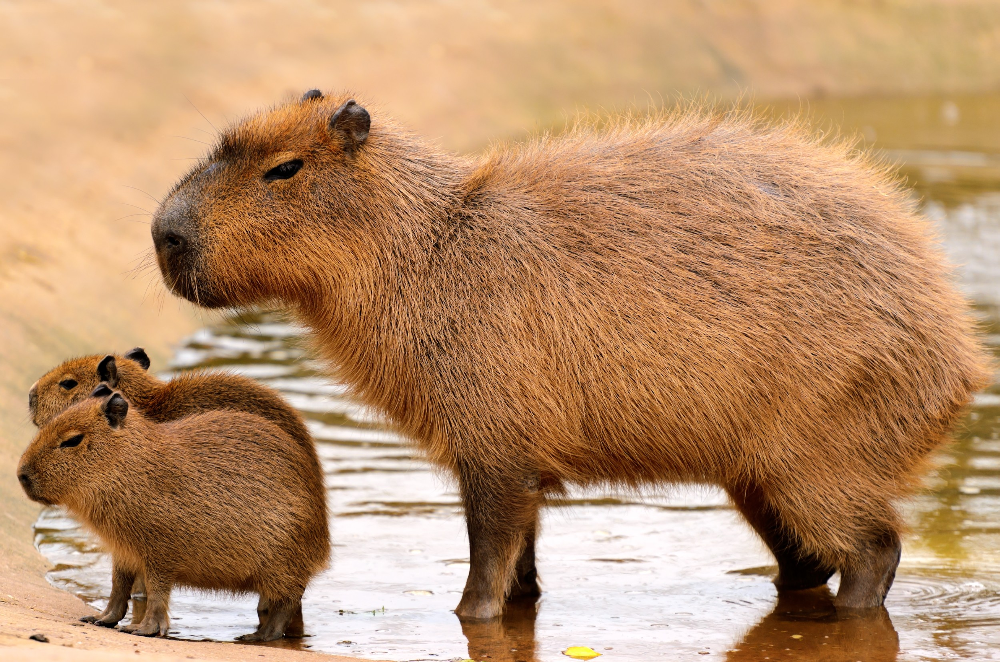

Créditos
Capivaras

Características das Capivaras
As capivaras são os maiores roedores do mundo, sendo conhecidas por sua aparência única e comportamento social. Elas são animais semiaquáticos, que habitam regiões de água doce, como rios, lagos e pântanos.
Hábitos de Vida das Capivaras
As capivaras são animais herbívoros e se alimentam principalmente de plantas aquáticas. Elas são animais sociais e vivem em grupos, conhecidos como "capivarais", que podem ter de algumas dezenas a centenas de indivíduos.
Distribuição e Conservação das Capivaras
As capivaras são encontradas em grande parte da América do Sul, desde o Panamá até o norte da Argentina. Elas são consideradas uma espécie de menor preocupação em relação à conservação, mas enfrentam ameaças como a destruição de habitat e a caça.
Curiosidades sobre as Capivaras
As capivaras são conhecidas por sua natureza pacífica e sociável, e muitas vezes são vistas convivendo com outras espécies de animais, como aves aquáticas. Elas também são excelentes nadadoras e podem ficar submersas por até cinco minutos.
Programador: João Victor Rantin Silvério